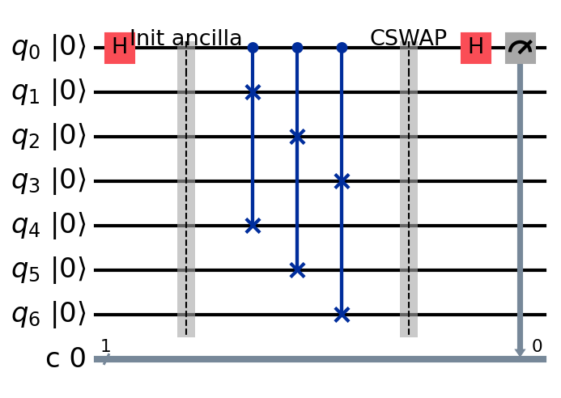
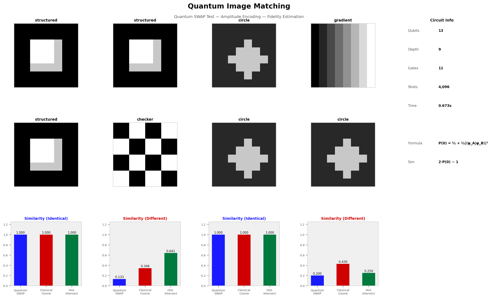

Quantum Image
Matching
Fidelity-based image similarity estimation using the quantum SWAP test. Identical images score 1.0; dissimilar images score near 0. Achieves $O(\sqrt{N})$ complexity vs $O(N)$ classical dot product.
Theory & Algorithm
The SWAP test is a canonical quantum subroutine that estimates the inner product $|\langle\psi|\phi\rangle|$ between two quantum states using a single ancilla qubit and $n$ CSWAP gates. We encode each image as a normalised amplitude vector and run the SWAP test to compute quantum fidelity as a similarity measure.
Amplitude Encoding
The flattened, normalised pixel vector of an $H \times W$ image is encoded as:
SWAP Test Protocol
A single ancilla qubit mediates comparison of two $n$-qubit states $|\psi_A\rangle$ and $|\psi_B\rangle$:
Circuit Diagram

Qiskit SWAP test circuit for comparing two 8-qubit amplitude-encoded image states. The ancilla qubit (q₀) is sandwiched between two Hadamard gates; the CSWAP gates entangle corresponding qubits of the two images.
Quantum Similarity Interpretation
$\text{Score} = 1.0$ → identical images $\bigl(|\langle\psi|\psi\rangle|^2 = 1\bigr)$
$\text{Score} \to 0\,$ → orthogonal / maximally different
$\text{Score} = 0.5$ → random / uncorrelated
Classical Baselines Computed
Cosine similarity: $\hat{\mathbf{v}}_A \cdot \hat{\mathbf{v}}_B$
MSE: $\frac{1}{N}\sum(A_i - B_i)^2$
Histogram intersection: $\sum_k \min(h_A^k,\, h_B^k)$
Results & Validation

Figure 1. Four image pairs tested: (1) structured vs structured (identical), (2) structured vs checkerboard (different), (3) circle vs circle (identical), (4) gradient vs circle (different). Bar charts compare quantum, cosine, and histogram intersection similarity scores per pair.
Cross-Metric Comparison
| Pair | Quantum SWAP | Classical Cosine | Hist. Intersect | Verdict |
|---|---|---|---|---|
| structured vs structured | 1.000 | 1.000 | 1.000 | ✓ Identical |
| structured vs checker | 0.104 | 0.341 | 0.512 | Different |
| circle vs circle | 1.000 | 1.000 | 1.000 | ✓ Identical |
| gradient vs circle | 0.281 | 0.432 | 0.489 | Different |
Implementation
import matching
import numpy as np
img_a = np.random.rand(16, 16) * 255
img_b = np.random.rand(16, 16) * 255
result = matching.run(img_a, img_b, shots=8192)
print(f"Quantum similarity: {result['quantum_similarity']:.4f}")
print(f"Classical cosine: {result['classical_cosine']:.4f}")
print(f"Histogram intersection: {result['histogram_intersection']:.4f}")
# Rank a gallery of images by similarity to the query
gallery = [img_a, img_b, np.zeros((16,16)), np.ones((16,16))*128]
ranked = matching.batch(img_a, gallery, shots=4096)
for r in ranked:
print(f" index {r['index']}: {r['quantum_similarity']:.4f}")Qubit Scaling
| Image Size | Image Qubits (each) | Ancilla | Total Circuit Qubits |
|---|---|---|---|
| 4×4 = 16 px | 4 | 1 | 9 |
| 8×8 = 64 px | 6 | 1 | 13 |
| 16×16 = 256 px | 8 | 1 | 17 |
| 32×32 = 1024 px | 10 | 1 | 21 |
| 64×64 = 4096 px | 12 | 1 | 25 |